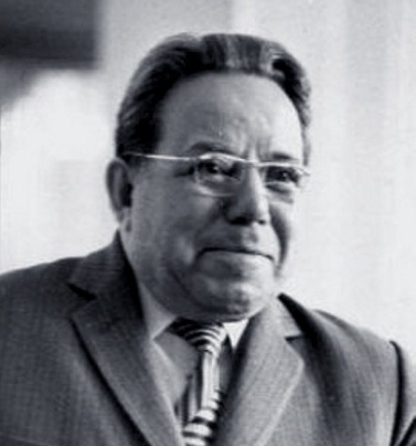
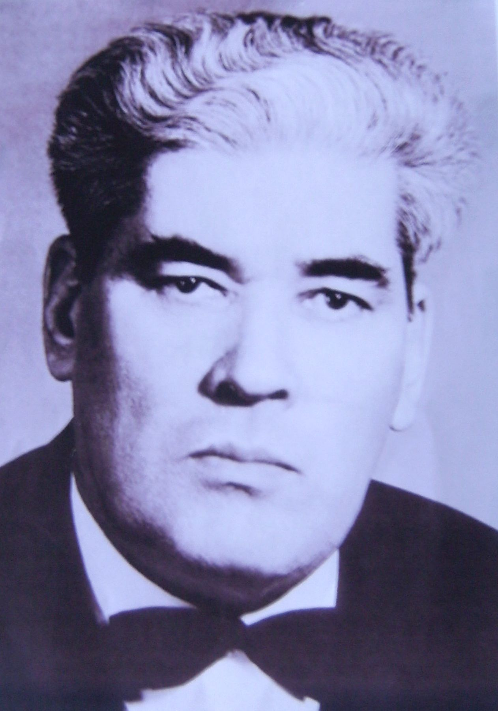
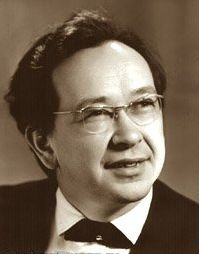
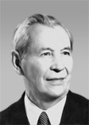

Рауф Муртазин. Родился 15 января 1910 года в деревне Темясово Баймакского района. Окончив в своём районе семилетнюю школу, Муртазин поступил в Уфимский музыкальный техникум на оркестровое отделение. В это же время он играл в оркестре Башкирского драматического театра на трубе.
С 1937 года Рауф Муртазин обучался в башкирском отделении Московской консерватории. Учёбу прервала война: композитор отбывает на фронт. Через полгода он принял участие в обороне Москвы, где был ранен и вскоре демобилизирован.
После окончания ВОВ Рауф наконец завершает и своё обучение в консерватории. В 1947 году возвращается Уфу и выполняет функции заместителя председателя Союза композиторов. В 50-60-х годах выходят ставшие впоследствии известными оперы: «Азат», «Буря», а также произведения для симфонического оркестра, камерно-инструментальные произведения, более 150 песен и романсов на стихи башкирских поэтов.
За свою музыкальную деятельность Рауф Муртазин был награждён двумя орденами «Знак Почёта», множеством медалями, в том числе «За оборону Москвы», «За доблестный труд».
Хусаин Ахметов. Родился 6 января 1914 года в деревне Чингиз нынешнего Баймакского района. В 1932 году Хусаин начинает учёбу в башкирской национальной студии Московской консерватории. До 1936 года Ахметов обучался вокальному исполнению, но впоследствии стало ясно, что гораздо лучше он себя проявляет в музыке. Таким образом, с 1936 по 1941 год он обучался по классу композиции.
С началом войны композитор становится музыкальным редактором Республиканского комитета радиофикации. В 1944 году Хусаин ахметов заканчивает своё обучение при Московской консерватории и уже в 1946 становится художественным руководителем Башкирской филармонии. В 1948 году Ахметов занимает пост председателя правления Союза композиторов Башкирской АССР, с которого уходит в 1953.
За свою жизнь башкирский композитор написал более 600 песен и романсов, 12 вокальных циклов на стихи башкирских и русских поэтов, а также оперные, симфонические, хоровые произведения, за что был удостоен 2-х орденов «Знак Почёта», кроме того Хусаин Ахметов является Народным артистом РСФСР и лаурятом Республиканской премии имени Салавата Юлаева.
Загир Исмагилов. Родился 26 декабря 1916 года в деревне Верхне-Серменево Белорецкого района. Начальное 7-летнее образование получил в соседней деревне, после чего поступил учиться в 1937 году в башкирскую студию при Московской консерватории имени П.И. Чайковского.
Во время Великой Отечественной войны юный композитор начал активно работать в Уфе: писал песни патриотического содержания («Башкирские батыры», «Песня о героях», «Последнее письмо», «Шаймуратов генерал») и выступал на фронтовых концертах. В 1948 году Исмагилов наконец заканчивает обучение в башкирской студии, а в 1954 завершает учёбу композиторский факультет консерватории. Уже через 4 года он становится председателем Союза композиторов БАССР. Кроме того, Загир Исмагилов руководил Уфимским государственным институтом искусств.
Творческая деятельность Исмагилова очень богата: оперы «Салават Юлаев» (дипломная работа по окончанию композиторского факультета), «Послы Урала», «Кахым-туря», «Акмулла», балет «Журавлиная песнь» (Совместно с Л.Б. Степановым), более 300 романсов и песен. Исмагилов внёс огромный вклад в развитие башкирского музыкального искусства, за что был награждён высшей наградой Советского Союза Орденом Ленина, а также башкирский композитор по праву является Заслуженным артистом РСФСР и СССР.
Нариман Сабитов. Родился 11 января 1925 года в Казани. По приезду в Уфу Сабитов в 1944 году поступает Башкирскую национальную студию Московской консерватории. Окончив обучение, Нуриман продолжил учёбу в композиторском факультете консерватории, параллельно обучаясь на курсе симфонического дирижирования.
После выпуска Нуриман Сабитов становится дирижёром Башкирского театра оперы и балета. Именно в 50-60-х композитор написал ставшими известными балеты «Горный орел», «Гульназира», «Люблю тебя, жизнь». Ушёл Сабитов очень рано - в 1971 году, но оставил после себя большое творческое богадство: симфонические поэмы, сюиты, концерты для скрипки, фортепьяно и симфонического оркестра, прелюдии и произведения для хора, более 200 песен и романсов.
Рафик Сальманов. Родился 15 сентября 1917 года в селе Аскарово в нынешнем Абзелиловском районе Башкортстана. В 1947 году Сальманов становится студентом башкирской студии Московской консерватории, полностью окончив обучение в 1953. С этого момента начинается творческая деятельность талантливого композитора: выступает на Башкирском радио, работает консультантом Республиканского Дома народного творчества. За личные заслуги Рафика Сальманова принимают в Союз композиторов БАССР.
Нельзя недоценить вклад Сальманова в развитии башкирской инструментальной музыки: ведь многие считают его - основоположником профессиональной музыки края. Это объясняют, например, его детские произведения «Поют юные друзья», «Подарю стране цветы», а также инструментальные пьесы для фортепиано и баяна.
 Загир Исмагилов. Родился 26 декабря 1916 года в деревне Верхне-Серменево Белорецкого района. Начальное 7-летнее образование получил в соседней деревне, после чего поступил учиться в 1937 году в башкирскую студию при Московской консерватории имени П.И. Чайковского.
Загир Исмагилов. Родился 26 декабря 1916 года в деревне Верхне-Серменево Белорецкого района. Начальное 7-летнее образование получил в соседней деревне, после чего поступил учиться в 1937 году в башкирскую студию при Московской консерватории имени П.И. Чайковского.